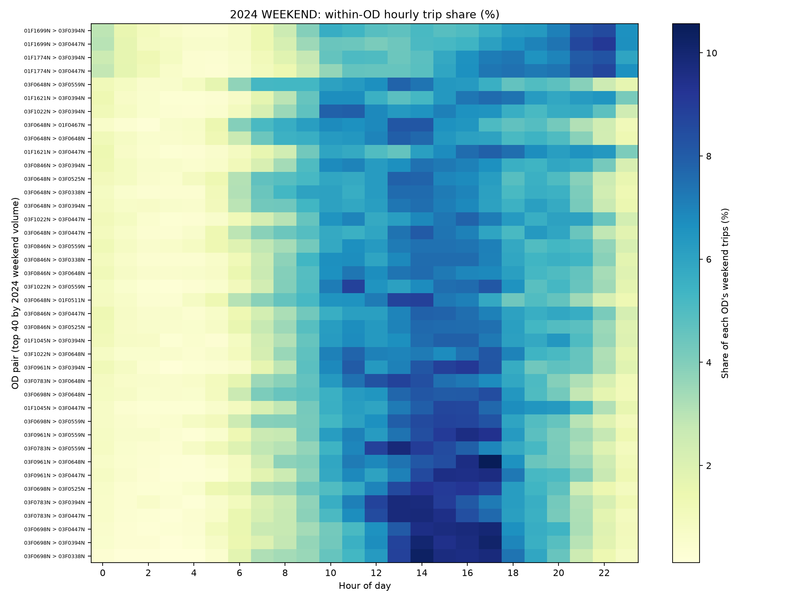
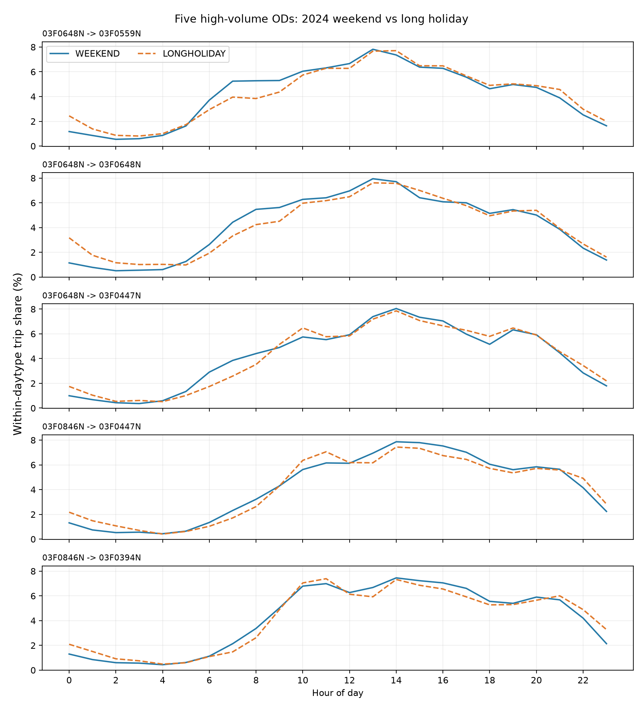

V3_LITE｜週末與連假 OD EDA（2024–2025，已完成）
正式 V3 範圍為國道 3 號龍潭 → 大溪北向、共 230 個研究日，保留 16,068,709 筆旅次、11,740 組 OD。此處分析假日交通量、OD 時間輪廓與跨年相似程度；下方舊版全期間 EDA 仍保留作歷史比較，不能混用 V2 與 V3 的分母。
16,068,709
V3 旅次（2024＋2025）
230 天
週末 184 天／連假 46 天
11,740
V3 全部 OD 組合
1,493
2024 年 ≥300 筆 OD；2025 涵蓋率 95.07%
跨年／日期類別的交通量
| 年度 | 日期類別 | 天數 | 總旅次 | 平均旅次／天 |
|---|---|---|---|---|
| 2024 | 一般週末 | 98 | 6,787,300 | 69,258 |
| 2024 | 連續假期 | 15 | 1,171,680 | 78,112 |
| 2025 | 一般週末 | 86 | 5,876,665 | 68,333 |
| 2025 | 連續假期 | 31 | 2,233,064 | 72,034 |
解讀限制：2024 連假單日平均需求確實較高，但日期數與連假季節組成不同。天氣可能影響需求，但不能僅憑年度比較就推論是下雨造成。需控制月份、連假階段、日序、降雨與其他混雜因素。






可用於分群的線索
- 2024 年 1,485 組可靠 OD 的連假－週末時段占比中位數：00–03 +4.72 pp、04–07 +1.74 pp、08–11 −0.01 pp、12–15 −1.69 pp、16–19 −4.91 pp、20–23 +0.10 pp。
- 距離與連假／週末每日旅次比值之對數相關（Spearman）：2024 年 0.666、2025 年 0.621；僅解讀為關聯，距離原始單位仍待確認。
- 2024 年最少 300 筆之 1,493 組 OD，涵蓋 2024 旅次 97.08% 及 2025 旅次 95.07%；其餘 OD 於預測中彙整為 OTHER。
V2 全期間 EDA（歷史基準）
以下原有數字是 V2 全期間樣本，不是前述 V3 週末／連假篩選後資料。
研究範圍與資料摘要
以國道三號大溪－龍潭北向瓶頸路段為主，利用旅次紀錄、五分鐘 VD 速度與佔有率、氣象及日曆資訊，探索需求在時間、車種、距離及 OD 結構上的差異。
45,150,592
旅次紀錄筆數
16,350
門架 OD 組合
731 天
2024–2025 年觀測期間
主要探索結果
時間型態
星期日需求較高，尖峰約 14:00；一般平日尖峰約 17:00，週末與平日的日內型態不同。
連假階段
連假需求維持高檔的時間較長；在暫定連假分組中，最後一天的北向尖峰約 13:00。
氣象條件
比較氣溫、露點、降雨及風速與需求的關聯；控制時間條件後，部分關聯方向改變。
車種結構
一般週末小客車需求上升較多；大型貨車、聯結車平均需求相對下降。
旅次距離
探索性分組下，100–500 公里旅次是週末需求增加的重要來源，主要由小客車貢獻。
OD 長尾分布
16,350 組 OD 中，9,266 組累積紀錄不超過 10 筆，約占 56.7%。
OD 篩選門檻的探索性比較
| 2024 年最低筆數 | 符合 OD 組數 | 涵蓋 2025 年需求 |
|---|---|---|
| 30 | 4,256 | 97.80% |
| 100 | 3,103 | 97.51% |
| 300 | 2,182 | 96.76% |
| 500 | 1,813 | 96.14% |
| 1,000 | 1,314 | 94.55% |
這些門檻屬於敏感度比較，尚未決定最終分群門檻。旅次距離分類及部分異常 QC 日期也仍需要進一步檢查。
研究問題與後續工作
在控制時間、天氣、歷史 VD 及總需求後，OD 組成能否提供額外的未來低速風險資訊？
- 持續處理缺漏時段、異常日期與特殊狀態。
- 建構 OD 分群所需的穩定特徵。
- 把旅次需求與 VD 交通狀態彙整並對齊至五分鐘尺度。
資料基準：2026/10/22 統計實務研究進度簡報。查看每週報告簡報。